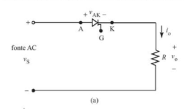
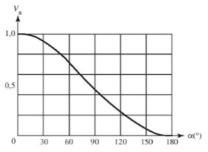
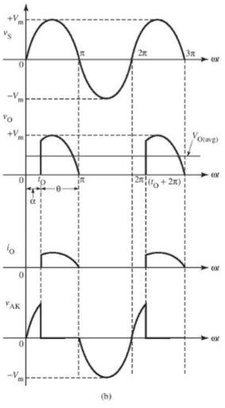
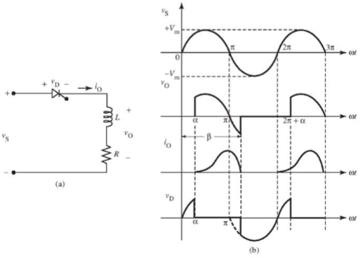
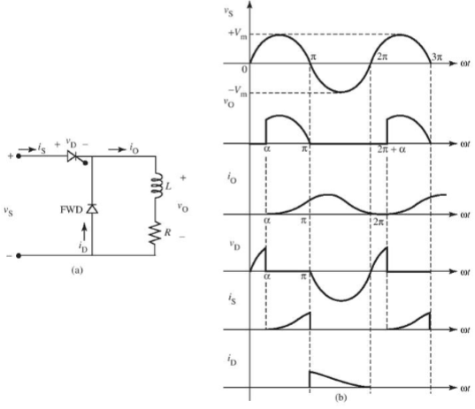

Retificador Controlado por Fase
Para projetar um "retificador controlado" ou "retificador controlado por fase", é necessário substituir os diodos usados nos retificadores anteriores por SCRs (retificadores controlados de silício), pois esse circuito possibilita o controle da amplitude da fase, bem como o controle do período de condução, da polaridade da tensão e da direção da corrente. Essa capacidade de controle torna esses retificadores particularmente valiosos em aplicações onde é essencial gerenciar com precisão a energia e a direção do fluxo de corrente.
Durante o semiciclo positivo da tensão de alimentação, o SCR estará diretamente polarizado e conduzirá se um pulso de acionamento for aplicado à porta. Se o SCR entrar no estado ligado em (T0), uma corrente fluirá na carga e a tensão de saída (v0) será igual à tensão de entrada. Essa condição estabelece a condução efetiva do SCR, permitindo o fluxo controlado de corrente e mantendo uma correspondência entre as tensões de entrada e saída.
Durante o semiciclo negativo, o dispositivo bloqueará o fluxo de corrente e não haverá tensão na carga. O SCR permanecerá inativo até que o sinal seja novamente aplicado à porta em (t0 + 2π).
 Um retificador de meia-onda com carga composta por R (resistor) e L (indutor). Se o SCR for adicionado com um ângulo de disparo igual a (alpha), a corrente na carga aumentará gradualmente, pois a indutância causará um atraso na corrente em relação à tensão. O indutor armazenará energia em seu campo magnético. Quando a tensão aplicada no sistema se tornar negativa, o SCR ficará inversamente polarizado. No entanto, o campo magnético do indutor manterá a corrente contínua até que o SCR entre no estado desligado. Nesse momento, a tensão do indutor mudará de polaridade para negativa. Isso resultará em uma média de tensão de saída menor em comparação com o caso em que há apenas uma resistência pura.
Para cortar a porção negativa da tensão de saída instantânea e suavizar a ondulação da corrente de saída, utiliza-se um diodo de retorno. Quando a tensão na carga tende à inversão, o FWD fica diretamente polarizado entrando no estado ligado, enquanto o SCR vai para o estado desligado devido à polarização inversa. Isso direciona a corrente que antes passava pelo SCR para fluir pelo diodo de retorno. Essa adição faz com que haja continuidade da corrente no sistema, graças à energia armazenada no indutor, resultando em uma tensão de saída equivalente ao sistema com carga puramente resistiva.
